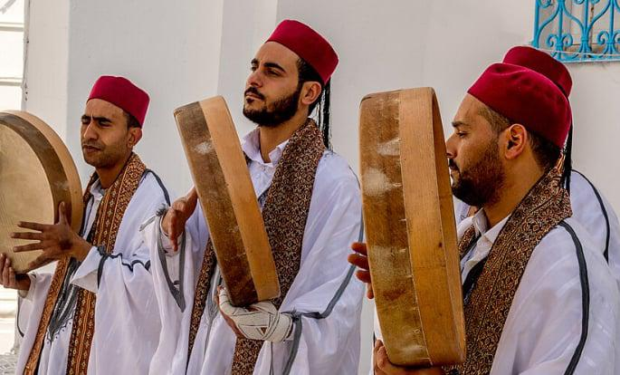

Tunisia 🇹🇳

Tunisia's musical landscape stands as a testament to centuries of cultural exchange, where Ottoman court music mingles with Berber folk traditions and Andalusian refugees brought sophisticated maqam structures that evolved into the celebrated Ma'luf repertoire. The haunting melodies of traditional oud and violin blend seamlessly with the earthy rhythms of mezwed bagpipes and bendir drums, while modern artists continue to reimagine these ancient sounds for contemporary audiences. This North African nation has cultivated a musical identity that is both deeply rooted in classical Arabic traditions and boldly innovative, making it a cornerstone of Maghrebi cultural expression.
Our investigation delves into the computational analysis of Tunisian musical traditions through advanced semantic web technologies, knowledge graph exploration via Wikidata, and machine learning approaches including large language models. By leveraging SPARQL queries and linked data principles, we aim to map the intricate relationships within Tunisia's musical ecosystem, assess the current state of digital documentation, and identify critical gaps where traditional knowledge remains underrepresented in contemporary data infrastructures.
| Query | Result |
|---|---|
|
SELECT ?musician ?musicianLabel ?birthPlaceLabel ?genreLabel WHERE { ?musician wdt:P31 wd:Q5; # Instance of human wdt:P106/wdt:P279* wd:Q639669; # Occupation: musician or subclass wdt:P27 wd:Q948. # Nationality: Tunisia OPTIONAL { ?musician wdt:P19 ?birthPlace. } OPTIONAL { ?musician wdt:P136 ?genre. } SERVICE wikibase:label { bd:serviceParam wikibase:language "[AUTO_LANGUAGE],en". } } ORDER BY ?musicianLabel |
This SPARQL query is designed to extract structured information about musicians from Tunisia using the Wikidata knowledge base. It focuses specifically on human individuals whose occupation is musician, and who have Tunisian nationality → Result |
|
SELECT DISTINCT ?tunisianMusician ?tunisianMusicianLabel ?collaborator ?collaboratorLabel ?work ?workLabel WHERE { ?tunisianMusician wdt:P31 wd:Q5; # get tunisian musicians wdt:P106/wdt:P279* wd:Q639669; wwdt:P27 wd:Q948. ?work wdt:P175 ?tunisianMusician. ?work wdt:P175 ?collaborator. FILTER(?collaborator != ?tunisianMusician) ?collaborator wdt:P31 wd:Q5; wdt:P106/wdt:P279* wd:Q639669. FILTER NOT EXISTS { ?collaborator wdt:P27 wd:Q948. } SERVICE wikibase:label { bd:serviceParam wikibase:language "[AUTO_LANGUAGE],en". } } LIMIT 100 |
This SPARQL query retrieves a list of Tunisian musicians who have collaborated with international (non-Tunisian) musicians on the same musical work (e.g., a song or album). → Result |
|
SELECT ?festival ?festivalLabel ?locationLabel ?startDate WHERE { ?festival wdt:P31 wd:Q132241; # Instance of music festival wdt:P17 wd:Q948. # Country: Tunisia OPTIONAL { ?festival wdt:P276 ?location. } OPTIONAL { ?festival wdt:P580 ?startDate. } SERVICE wikibase:label { bd:serviceParam wikibase:language "[AUTO_LANGUAGE],en". } } ORDER BY ?startDate |
This query produces an ordered list of festivals held in Tunisia, providing their names, where they are held (if available), and when they start (if recorded) → Result |
|
SELECT ?album ?albumLabel ?musicianLabel WHERE { ?album wdt:P31 wd:Q482994; # Instance of album wdt:P175 ?musician. # Performer ?musician wdt:P27 wd:Q948. # Nationality: Tunisia SERVICE wikibase:label { bd:serviceParam wikibase:language "[AUTO_LANGUAGE],en". } } ORDER BY ?albumLabel |
This query is designed to retrieve information about musical works (such as songs or albums) that have been created by musicians from Tunisia → Result |
Despite Tunisia’s vibrant and internationally recognized music festival scene, Wikidata contains only a very small number of entries explicitly classified as festivals in the country. Notable examples such as Les Dunes Electroniques, Djerba Fest, and Sicca Jazz are completely absent, i note an underrepresentation of North African cultural events and a broader issue of imbalance in the digital documentation of global music traditions both in terms of quantity and classification quality . In response to this gap, I initiated a focused effort to enrich Wikidata by manually adding and updating entries related to prominent Tunisian music festivals. By doing so, the goal is to promote greater visibility for Tunisia’s cultural events and ensure that Wikidata better reflects the country’s role in the global music festival scene
I provided few-shot examples to ChatGPT and Gemini to improve response quality.
🗯️ ChatGPT Response :


🗯️ Gemini Response :

🗯️ Comparison:
While both responses include legitimate Tunisian festivals, ChatGPT's inclusion of the "International Festival of the Sahara" is somewhat problematic for this specific task. The International Festival of the Sahara, held in Douz, is primarily a cultural festival celebrating Berber and desert traditions, featuring camel racing, traditional crafts, poetry, and folklore alongside some musical performances. While music is present, it's not fundamentally a music festival in the way that the International Festival of Carthage or jazz festivals are. This suggests that ChatGPT may have been less precise in filtering for festivals that are specifically music-focused, whereas Gemini's selections (particularly the Festival International de Musique Symphonique d'El Jem and Tabarka Jazz Festival) more clearly align with the "music festival" criteria requested in the prompt.
The combination of structured data, semantic technologies, and large language models has provided valuable insights into the digital documentation of Tunisian music. This approach highlighted both the depth of Tunisia's musical heritage and the significant gaps in Wikidata's representation, where accurate information was often missing or important musical traditions were entirely overlooked. The strategies employed to bridge these deficiencies through enhanced data modeling and the application of sophisticated querying and prompting methodologies show considerable potential for improving the documentation and preservation of Tunisia's diverse musical landscape. These findings underscore the need for more comprehensive and accurate representation of tunisian traditionals in semantic knowledge bases.